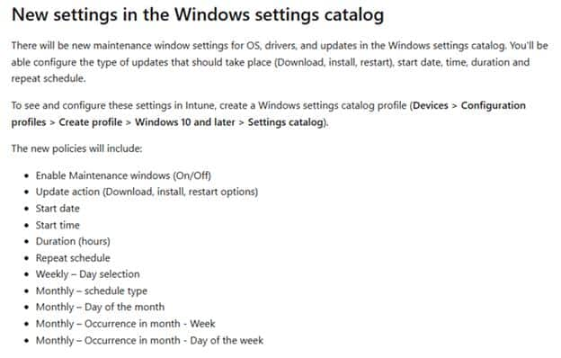
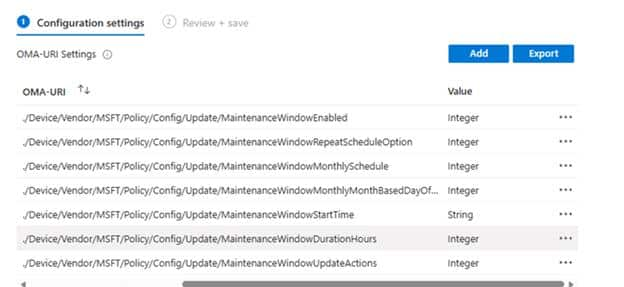
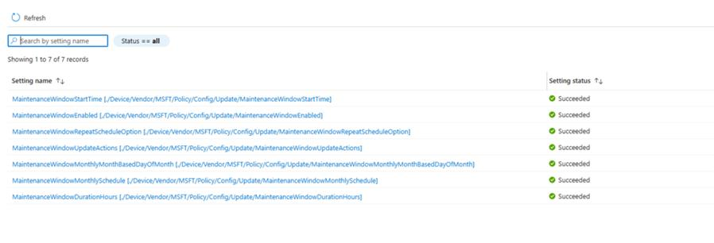

A while ago, I wrote about something interesting that showed up in the Intune “In development” documentation. Microsoft mentioned new Maintenance Window settings for OS updates, drivers, and updates in the Windows Settings Catalog.
{kind=link}

That immediately caught my attention. Not because we needed another setting in Intune, but because this one touched a very familiar problem: timing. At what point is Windows allowed to do update work? Should drivers install during the day, or only inside a controlled window? What about firmware updates? And how do we prevent all of this from kicking in at exactly the wrong moment?
We already have active hours, deadlines, and restart controls. Useful settings, but not the same thing as a real Maintenance Window. Active hours tell Windows when it should try to stay out of the user’s way. A maintenance window does the opposite. It tells Windows when it is allowed to do the work. That difference is exactly why this caught my attention.
Maintenance Window Settings Catalog Disappeared
Sometime later (1 April), the maintenance window entry disappeared from the public Intune “In development” page.
The GitHub history shows the change clearly. The maintenance window section was removed from the documentation. The removed text specifically talked about new Windows Settings Catalog settings for maintenance windows, including configuration steps and policy options.

That is the interesting part. It was not a small wording change. It was not moved to a different sentence. The Settings Catalog announcement for this feature was pulled back before it landed. That does NOT mean the whole Maintenance Window idea is gone forever. It does mean the original public wording is no longer something we should treat as the current Intune roadmap.
Maintenance Window CSPs Still Work
The best part is that the Windows Update CSP still documents the maintenance window policy family.
The CSP still contains settings such as MaintenanceWindowEnabled, MaintenanceWindowDurationHours, MaintenanceWindowStartDate, MaintenanceWindowStartTime, MaintenanceWindowRepeatScheduleOption, and MaintenanceWindowUpdateActions.
That last one is important because it describes what Windows should only do during the configured maintenance window. The documented actions are around download, install, restart, or install and restart. The Maintenance Window CSPs are still there. The policy surface is still there. With it we can still configure the Maintenance Windows CSP manually (when needed)


The Intune “In development” entry that promised a Settings Catalog experience is the only part that was pulled back.
For now, the Custom OMA URI route is still the way to test it. I covered the configuration steps earlier, and those CSP settings are still documented.
Maybe Maintenance Window Settings Catalog Just Needed More Time
A maintenance window sounds simple, but there is more to it than just enabling a setting.
You need a start time, a duration, a repeat schedule, and the actions Windows is allowed to perform inside that window. In the end, it directly decides how Windows Update behaves on the device. That kind of feature needs a clear story before it shows up in Intune, because admins will not read “maintenance window” as a tiny Windows Update detail. They will read it as something bigger. And honestly, that is not weird… because this is a feature everyone is waiting for.
When admins see a maintenance window, they want to know what respects that window. They want to know what ignores it. They want to know what happens when the device is offline, what happens when a deadline is reached, and what happens when a restart is needed outside the configured time. Those are the details that make this kind of feature useful or confusing.
Maybe it simply needed more time. The experience could have changed, the wording may have gone public a bit too early, or Microsoft pulled it back before everyone started searching the Settings Catalog for something that was not ready yet. Whatever the reason was, the breadcrumb is still there. The Settings Catalog announcement appeared, and then it disappeared.
Maybe They Are Saving It For Ignite
Of course, there is always another option. Maybe Microsoft looked at the documentation and thought: not yet, let’s save this one for a bigger moment. (just guessing… nothing more)
Maybe Ignite needed another slide. Maybe someone saw the words “maintenance window” in the public docs and decided this feature deserved a bit more spotlight before every admin started clicking through the Settings Catalog. Which makes sense, as this maintenance window feature deserves a lot of attention (people are waiting for it)
For now, the Intune Settings Catalog experience is not there in the public roadmap anymore. That means we are back to the part Windows already gives us: the Update CSP.


So if you want to investigate this today, the CSP is where the story currently lives. Not because that is the perfect admin experience, but because that is the public policy surface that still documents the maintenance window settings.
Where This Leaves Us
The current Intune “In development” page no longer mentions Maintenance Window Settings Catalog. That does not make the feature useless. The Windows Update CSP still documents the maintenance window policies, still uses preview wording, and still gives us a way to enable it manually when we want to test it.
So for now, the CSP is the place to look. The Maintenance Window Settings Catalog disappeared from the public Intune docs, but the maintenance window update policy surface is still there. Enough to test, enough to understand, and definitely enough to keep an eye on.